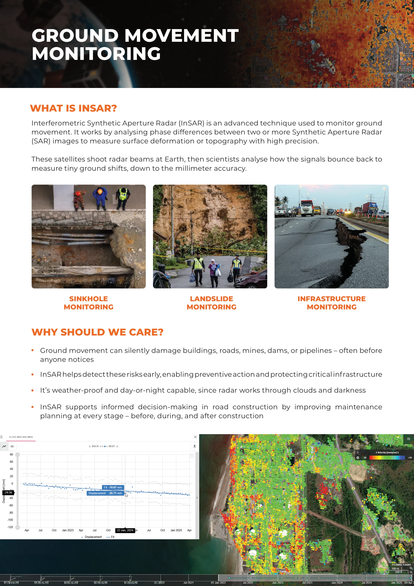
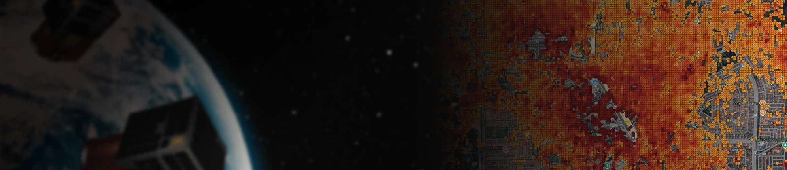
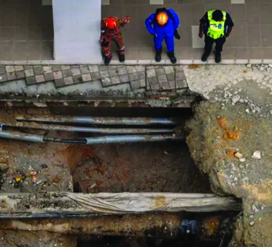
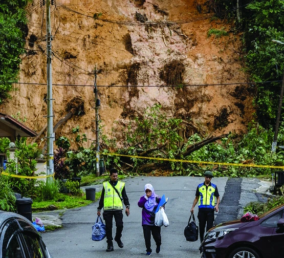
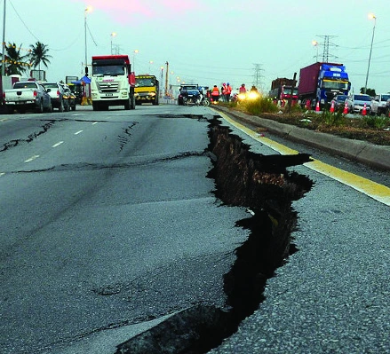
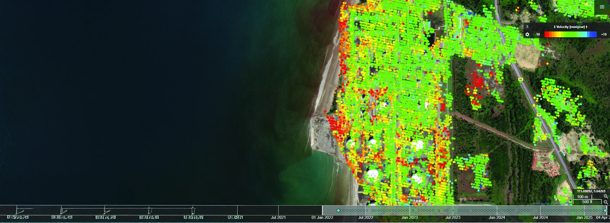
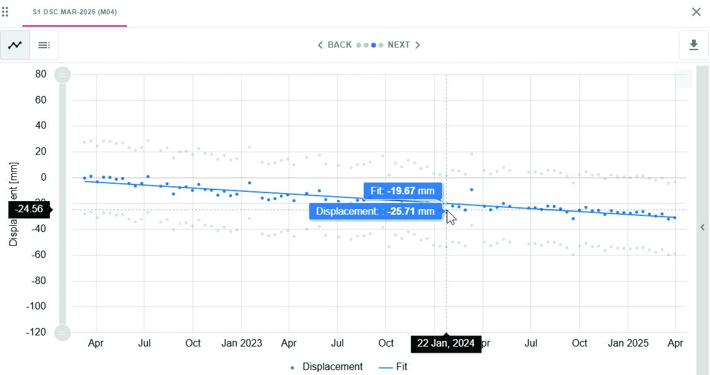

Detect ground movement before its impacts become visible.

What is InSAR?
Interferometric Synthetic Aperture Radar (InSAR) analyses phase differences between two or more SAR images to measure surface deformation or topography. Radar signals reflected from Earth reveal ground shifts down to millimetre accuracy, as described in the brochure.
Why should we care?
- Ground movement can silently damage buildings, roads, mines, dams and pipelines before it is noticed.
- Early detection enables preventive action and protects critical infrastructure.
- Radar works through clouds and darkness, enabling day-and-night monitoring.
- InSAR supports maintenance planning before, during and after road construction.
Applications
- Sinkhole monitoring
- Landslide monitoring
- Infrastructure monitoring
In pictures
{kind=link}

{kind=link}
{kind=link}

{kind=link}
{kind=link}

{kind=link}
{kind=link}

{kind=link}
{kind=link}

{kind=link}
{kind=link}

{kind=link}
{kind=link}
{kind=link}
{kind=link}
{kind=link}
Read the complete source transcript
GROUND MOVEMENT MONITORING
WHAT IS INSAR?
WHY SHOULD WE CARE?
Interferometric Synthetic Aperture Radar (InSAR) is an advanced technique used to monitor ground movement. It works by analysing phase differences between two or more Synthetic Aperture Radar (SAR) images to measure surface deformation or topography with high precision.
These satellites shoot radar beams at Earth, then scientists analyse how the signals bounce back to measure tiny ground shifts, down to the millimeter accuracy.
SINKHOLE MONITORING
LANDSLIDE MONITORING
INFRASTRUCTURE
MONITORING
Ground movement can silently damage buildings, roads, mines, dams, or pipelines – often before anyone notices
InSAR helps detect these risks early, enabling preventive action and protecting critical infrastructure
It’s weather-proof and day-or-night capable, since radar works through clouds and darkness
InSAR supports informed decision-making in road construction by improving maintenance planning at every stage – before, during, and after construction